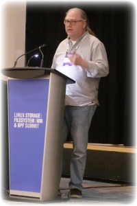

Unique identifiers for NFS
In a combined filesystem and storage session at the 2022 Linux Storage, Filesystem, Memory-management and BPF Summit (LSFMM), Chuck Lever wanted to discuss the need for a permanent, globally unique ID for network filesystems. He was joined by Hannes Reinecke who has worked on the problem for NVMe storage devices; Lever said something along those lines is needed for NFSv4. He was hoping to find a solution during the session, though it would seem that the solution may lie in user space—and documentation.
The general problem is that network filesystems and network storage devices need to have a unique ID, durable over reboots, that clients can use to identify them, Lever said. In addition, clients need these IDs as well so that servers can keep track of the clients when they are rebooted. On a physical host, something like the machine ID can be used, but once virtualization enters the picture, "things get a little foggier".

There are a number of questions, he said. When a container is created, how is the ID created and where is it stored? If a virtual machine (VM) is cloned from an existing VM, how does the system ensure that the unique ID changes for the new guest? He and others are looking for a solution for NFS, so he was soliciting ideas and thoughts from the assembled developers.
The connection to NVMe was not entirely clear to me from the session, though the problems described have a similar scope. Reinecke said that for NVMe, it is just a matter of storing the right value; there is already a defined location for it. But the question is how that value should be generated and who should be able to change it. Part of the problem is in defining what "the host" is in a world where containers and VMs are constantly being created and destroyed. A system may have several interfaces that are partitioned or shared among the VMs and containers, so what does it mean to be a "machine" or a "host" in those settings? To a certain extent, that governs when and how these unique IDs can and will change.
Ted Ts'o gave an example of an NFS server that is implemented in a VM and exports a filesystem that is stored in cloud storage. If the VM needs to be killed and restarted at some point for maintenance, the new VM is effectively the same server as the old. It is analogous to swapping the motherboard of a hardware server; the underlying "machine" has changed, but the disks and the functionality it provides are still the same. So the definition of the host depends on various factors that may not be amenable to a set of rules.
But Lever said the server side is easier because it has persistent storage where a unique ID can be placed; clients do not necessarily have that. On the server, it could be put into an /etc file. Clients can get a unique ID as a module parameter from the kernel command line, for example; it could be calculated as a hash of the machine ID. A hash would be used since machine IDs are not supposed to be put on the wire, he said. That works fine for real hardware, but containers on the same system would get the same "unique" ID, which is a problem.
James Bottomley said that the problem was basically solved on the server side by using its persistent storage. Clients could simply use a random ID, he suggested, but Lever said those values need to be preserved over a reboot. Bottomley wondered why it mattered since restarting the container was effectively bringing up a new instance, but others cautioned that not all containers work that way. Bottomley said that containers that continue living from generation to generation will need to have persistent storage, though, so those can store the unique ID there.
Christian Brauner said that it should be up to the container manager to store that information and provide it as needed to the containers it creates; it just needs to be standardized. Lever agreed, noting that he and others have been trying to document the requirements for use by container orchestration system developers. Those developers will need to figure out where they want to store those values in order to provide them to the containers.
Bottomley asked about systems that scale containers up and down by a factor of ten or 100; he suggested that new IDs would be created whenever these new containers were created, not reused from previous instances. Lever agreed and said that while each container needed its own unique ID, he did not think the values needed to persist across container instances, since once the container is destroyed it no longer has any open or locked files. The unique ID (or "uniquifier") is used to recover when clients go away and come back while files are open or locked.
Steve French said that a container might be moved, so it could be checkpointed and then restored somewhere else. The server needs to be able to detect that it is the same client in order to maintain its state. In that case, though, the ID should still be available in the restored container.
Ts'o said that maybe clients that care about preserving their open/locked-file state need to have a persistent location in /etc to store the ID. If there is nothing there (or no persistent storage), then the ID should be random and that client does not participate in the state-recovery handling.
Containers on Linux generally rely on separate network namespaces, an attendee said, but each namespace needs its own unique ID. Reinecke disagreed with that, however, as it is dependent on the kind of container and application being run. If the namespace has its own IP address, Lever said, then it will need its own ID.
Josef Bacik said that Facebook uses containers exclusively and it would expect that the IDs would be provided by some central authority. Those values would be configured per container by consulting some service running in the internal network. He suggested that NFS just provide a generic interface to set the client ID and allow user space to figure out how to set it to the proper value based on the use case.
Lever asked if administrators of these kinds of systems with thousands of containers needed tools to configure and manage the IDs or if documentation would suffice. Bacik said that documentation is all that's needed. "Tell us what to do" in order to use the facility, he said, and the user-space developers would run with it.
Lever said that he was concerned that some would not read the documentation, then their filesystem would not work correctly out of the box. But Bottomley said that the fallback should be to use a randomly generated ID; those who want something different will have to arrange to make that happen. That is not what happens today, Lever said; if there is no ID provided, it uses the same value as the host. "That's probably wrong."
Part of the difficulty here is that containers are a user-space concept, Ts'o said. That means that the container orchestration system needs to handle setting these values; the kernel is really in no position to do so.
Lever said that he has some documentation that he had been working on. He would be updating that and asked Bacik to review it to see if it would be sufficient for the container developers at Facebook. Bacik agreed to do that and the session soon trailed off.
| Index entries for this article | |
|---|---|
| Kernel | Filesystems/Network |
| Kernel | Network filesystems |
| Conference | Storage, Filesystem, Memory-Management and BPF Summit/2022 |
Posted May 18, 2022 20:21 UTC (Wed)
by jra (subscriber, #55261)
[Link] (5 responses)
Posted May 18, 2022 20:38 UTC (Wed)
by willy (subscriber, #9762)
[Link] (2 responses)
Posted May 19, 2022 13:29 UTC (Thu)
by grawity (subscriber, #80596)
[Link] (1 responses)
The machine SID is generated at install time (much like Linux /etc/machine-id); it's not tied to any hardware (or VM feature) but stored as part of the local user account database. Installing a fresh VM will give it a new SID. Migrating a VM will retain its SID.
However, cloning a system (whether it's a VM or a physical machine) will result in machines with identical SIDs, and changing the machine SID is technically hard and completely unsupported. (There used to be a SysInternals tool called "newsid" which was meant to be used after cloning a system to give it a new SID, but it was retired.)
Posted May 30, 2022 21:21 UTC (Mon)
by JanC_ (subscriber, #34940)
[Link]
Posted May 18, 2022 20:51 UTC (Wed)
by flussence (guest, #85566)
[Link]
Posted May 18, 2022 21:03 UTC (Wed)
by zeha (subscriber, #61580)
[Link]
Unique identifiers for NFS
Unique identifiers for NFS
Unique identifiers for NFS
Unique identifiers for NFS
Unique identifiers for NFS
Unique identifiers for NFS
systemd also has ideas on unique IDs per machine (see hostnamectl, etc).
Would be great if an existing concept could be reused, and not standard n+1.